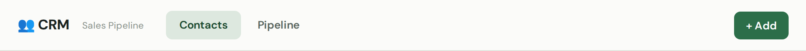
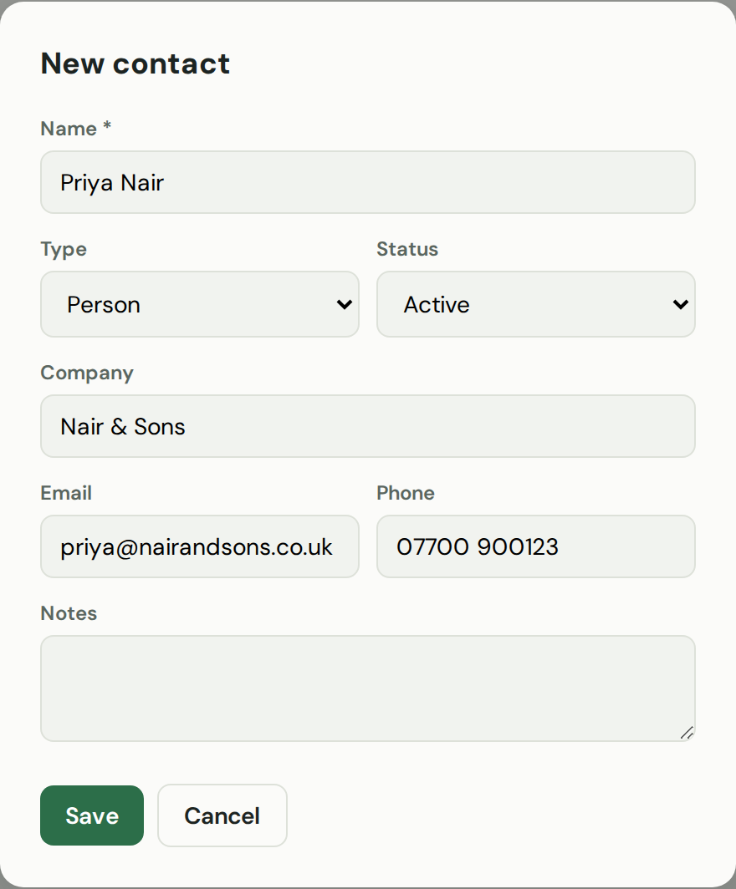
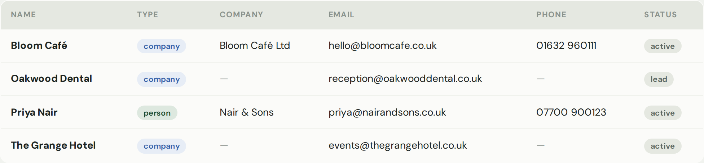
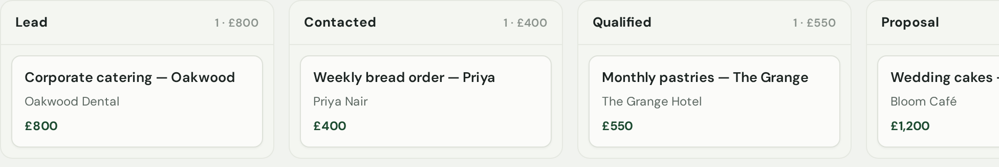
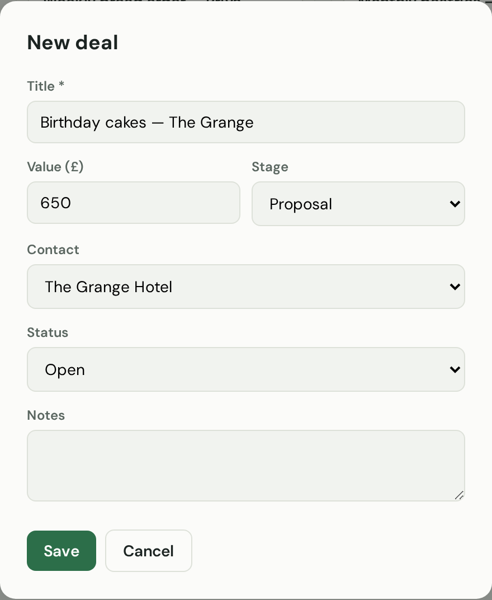
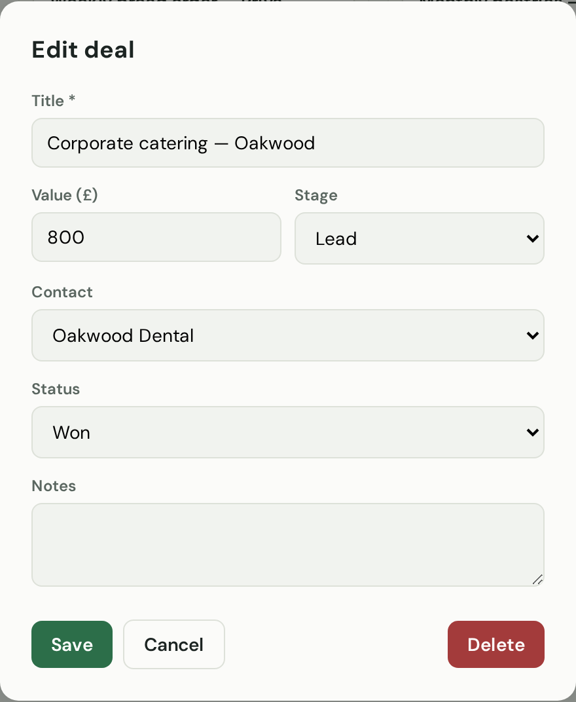

Your address book and deal tracker in one place. Keep everyone you deal with on file, and follow each opportunity from the first hello to a win.
What this page is for
CRM is short for Customer Relationship Manager — a simple way to keep track of the people and companies you deal with, and the deals you're working on. It has two tabs: Contacts (your address book) and Pipeline (your deals).
What you can do here
Keep all your contacts — people and companies — in one tidy list.
Save each one's company, email, phone and notes.
Track deals as they move from a first chat to a win.
See how much money is sitting in each stage of your pipeline.
How to add a contact
On the Contacts tab, click + Add (top right).

Contacts and Pipeline live at the top; + Add is on the right.
Type their name and choose Person or Company. Add their company, email and phone if you have them.

Only the name is required — the rest is up to you.
Click Save. They're now in your contacts list.

All your people and companies in one place.
Tip: Use the Status to tell a warm lead from an active customer, so your list stays easy to scan.
How to track a deal
Click the Pipeline tab. Your deals show as cards in columns — one column per stage. Drag a card to the next column as the deal moves forward. To add a new one, click + Add.

Each column is a stage; each card is a deal, with its contact and value.
Give the deal a title, a value, which stage it's at, and the contact it's with. Click Save.

Link it to a contact so you always know who it's with.
When you win the work, open the deal and set its Status to Won.

Mark it Won when it's in the bag.
The two tabs
Contacts — your address book: everyone and every company you deal with. Pipeline — your deals as a board, so you can see at a glance what's coming and what it's worth.